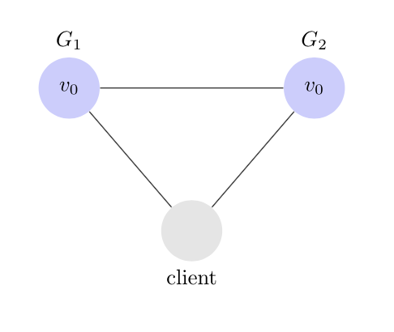
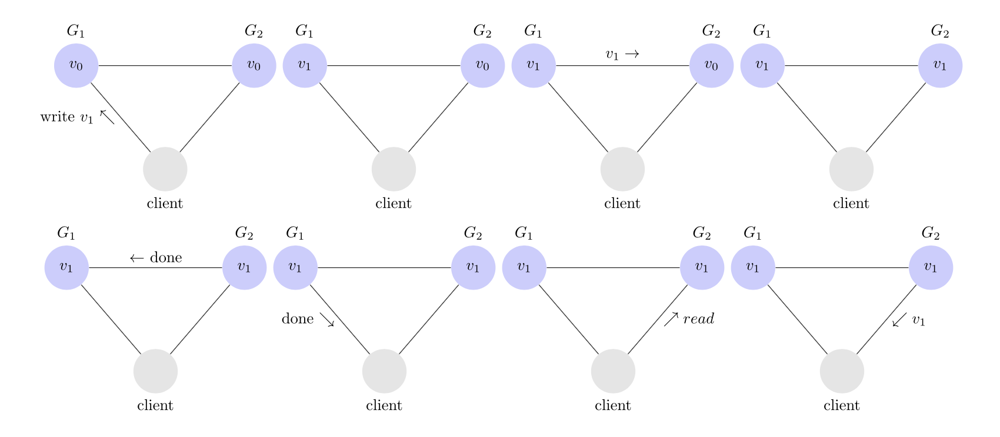
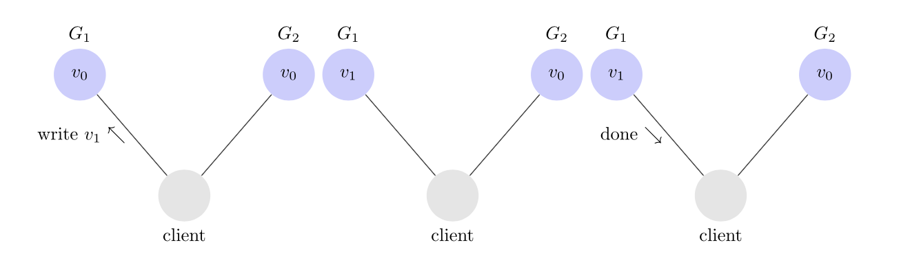

Q&A12(2)
Егор Ерохин
наставникСпринт 12(2)
- CAP
- DAL
- DAO
- ТЗ12
CAP
- Consistency
- Availability
- Partition tolerance

Согласованность данных
Записали X — при чтении гарантируется X.
- Доступность — запрос к работающему серверу гарантирует ответ.
- Устойчивость к разделению — гарантируется работа при отсутствии связи узлов.
Доказательство CAP 
CAP
- Consistency
- Availability
- Partition tolerance
DAL — DAO
- Data Access Layer
- Data Access Object
ФП12 Persistent Filmorate
- Создаем спроектированную БД
- Реализуем DAO
- InMemory имплементации можно удалить или доработать
- Интеграционное тестирование
- Получение всех жанров
- Получение жанра/рейтинга по id
Ваши вопросы
- CAP
- DAL
- DAO
- ТЗ12